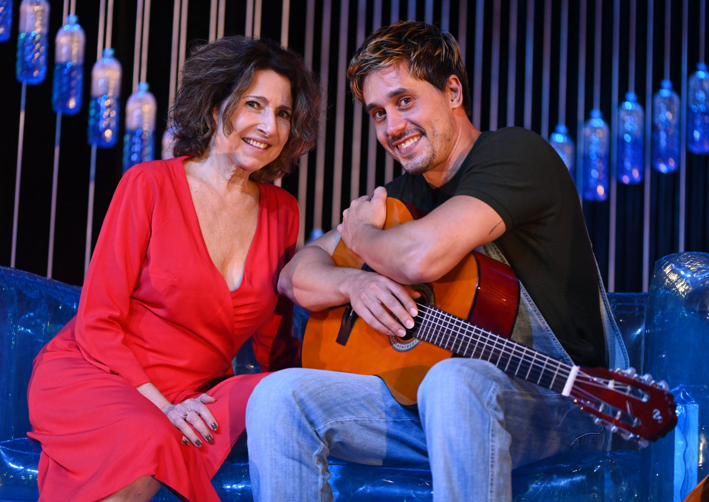

Espetáculo “Matilde”, comédia em homenagem a Paulo Gustavo, segue em cartaz no CCBB BH até 1º de junho

Estrelada por Malu Valle e Ivan Mendes, peça marca os 35 anos de carreira da atriz e revive projeto idealizado por Paulo Gustavo com humor e afeto
O Centro Cultural Banco do Brasil Belo Horizonte (CCBB BH) recebe até o dia 1º de junho a comédia “Matilde”, espetáculo inédito dedicado à memória do ator e humorista Paulo Gustavo. Estrelada por Malu Valle e Ivan Mendes, a montagem tem texto de Julia Spadaccini, direção de Gilberto Gawronski e traz à cena uma história sobre afeto, envelhecimento e relações improváveis, com sessões de quinta a segunda, às 20h, e sessão dupla no dia 31/05 (sábado), às 17h e 20h.
Uma história real de amizade transformada em teatro
O projeto da peça “Matilde” nasceu em 2015, a partir de uma ideia de Paulo Gustavo, que desejava criar um espetáculo sob medida para Malu Valle, invertendo os papéis da peça que marcou o início de sua carreira. Agora, dez anos depois, a obra ganha os palcos como uma homenagem afetuosa ao artista, celebrando também os 35 anos de trajetória de Malu Valle nos palcos.
Na trama, Matilde, uma mulher de 60 anos, vive sozinha em Copacabana até alugar um quarto em sua casa para Jonas, um jovem ator de 36 anos que busca seu lugar no mundo. O convívio entre os dois transforma suas rotinas e perspectivas, em um encontro recheado de humor, embates e descobertas. A narrativa reflete temas como discriminação etária, sexualidade na terceira idade, e a construção de novas formas de afeto intergeracional.
Comédia com crítica e empatia
A encenação aposta na comédia satírica, gênero querido por Paulo Gustavo, para abordar com leveza questões sociais urgentes e universais. Ao mesmo tempo divertida e tocante, “Matilde” convida o público a refletir sobre os papéis impostos a mulheres mais velhas na sociedade, a solidão urbana, e a importância de se reinventar em qualquer fase da vida.
A peça é também um tributo ao pensamento artístico de Paulo Gustavo, que via o teatro como um espaço potente de escuta e transformação social, reunindo elementos populares e sofisticados em suas criações.
Acessibilidade e atividades paralelas
A temporada conta com sessões acessíveis, como tradução em Libras nos dias 18 e 25 de maio, além de audiodescrição no dia 25. No dia 24/05, haverá bate-papo com o elenco após o espetáculo. No dia 29/05 (quinta-feira), das 14h às 18h, acontece a “Oficina de Criação e Produção Artística”, com Caio Bucker e Ivan Mendes — inscrições em breve pelo site ccbb.com.br/bh.
SERVIÇO – “MATILDE”
📍 Local: Teatro I – Centro Cultural Banco do Brasil Belo Horizonte
📅 Temporada: Até 1º de junho de 2025
🕗 Sessões: Quinta a segunda, às 20h | Sessão dupla no sábado 31/05: às 17h e 20h
🎟 Ingressos: R$30 (inteira) | R$15 (meia) – à venda no site ccbb.com.br/bh e na bilheteria do CCBB BH
👤 Classificação indicativa: 14 anos
⏱ Duração: 80 minutos
♿ Acessibilidade: Sessões com Libras e audiodescrição em datas específicas